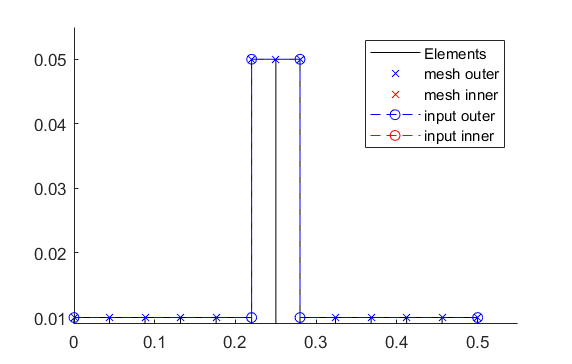
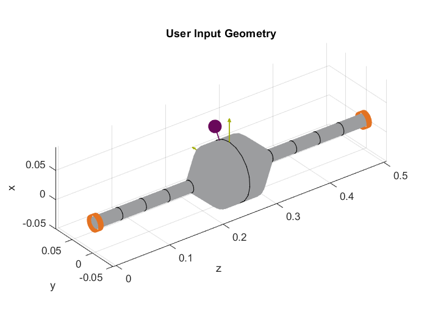

Simulation_file_example¶
This is an example code for a simulation file of a simple Laval rotor for system analyses. All the code snippets can be copied and pasted together in a Matlab script and executed directly. The hidden (commented out) code parts should show further possibilities. The presented functions often contain options that cannot all be shown in the examples. More options can be found in the detailed documentation or in the source code.
Closing all former figures and cleaning the workspace.
1 2 3 | close all
clear all
% clc
|
Import of the file path and of the corresponding cnfg-file.
1 2 3 4 5 6 7 | %% Import and formating of the figures
import AMrotorSIM.* % path
Config_Sim_Modal % corresponding cnfg-file
Janitor = AMrotorTools.PlotJanitor(); % Instantiation of class PlotJanitor
Janitor.setLayout(2,3); %Setting layout of the figures
|
Assembly and visualization of the model
1 2 3 4 5 6 7 8 9 10 11 12 13 14 15 16 17 18 19 20 21 22 23 24 25 26 27 | %% Assembly of the rotordynamic model
r=Rotorsystem(cnfg,'Laval-Rotor'); % Instantiation of class Rotorsystem
r.assemble; % assembly of the model parts, considering the ...
% components (sensors,..) from the cnfg-file
r.rotor.assemble_fem; % assembly of the global system matrices: M, D, G, K
%% Visualization of the assembled rotor model
r.show; % lists the associated components of the model in teh Matlab ...
% Command Window
r.rotor.show_2D(); % Plot of a side view of the rotor elements
% r.rotor.geometry.show_2D(); % Plot of a side view of the ..
% rotor radii
% r.rotor.geometry.show_3D(); % Plot of a 3D-isometry of the rotor
% r.rotor.mesh.show_2D();
% r.rotor.mesh.show_2D_nodes();
% r.rotor.mesh.show_3D();
g=Graphs.Visu_Rotorsystem(r); % Instantiation of class Visu_Rotorsystem
g.show(); % Plot of a 3D-isometry of the rotor with sensors, loads,...
u_trans_rigid_body = r.compute_translational_rigid_body_modes; % Locates ..
% the translational DoF's of the rotor in a matrix
overall_mass = r.check_overall_translational_mass(u_trans_rigid_body) % ...
% Calculates the translational mass
|
2D side view of the rotor (left) and 3D-isometry (right)
 {kind=link}
{kind=link}
Determination of the results (FRF, Campbell, Modal analysis) and their visualization
1 2 3 4 5 6 7 8 9 10 11 12 13 14 15 16 17 18 19 20 21 22 23 24 25 26 27 28 29 30 31 32 33 34 35 36 37 38 39 40 41 42 43 44 45 46 47 48 49 50 51 52 53 54 55 56 57 58 59 60 | %% Running system analyses
%% Frequency response function
frf=Experiments.Frequenzgangfunktion(r,'FRF'); % Instantiation of ...
% class Frequenzgangfunktion
type = 'd'; % FRF type: displ. 'd', veloc. 'v', accel. 'a'
inPos = [0,100,200]*1e-3; % Input positions on the rotor axis
outPos = 100e-3; % Output positions along the rotor axis
f = 1:2:100; % Frequency resolution of the FRF
rpm = 0; % Rotational speed
[f,H]=frf.calculate(f,inPos,outPos,type,rpm,{'u_x','u_y','psi_x'}, ...
{'u_x','psi_x'}); % Calculation of the FRF's from the three input ...
% directions {'u_x','u_y','psi_x'} to the two ...
% output directions {'u_x','psi_x'} at the ...
% corresponding positions
[deltaIn,deltaOut]=frf.print_distance_delta; % Plot of the gap between ...
% the desired positions along the rotor axis and ...
% the closest node position in the Command Window.
visufrf = Graphs.Frequenzgangfunktion(frf); % Instantiation of ...
% class Frequenzgangfunktion for figures
visufrf.set_plots('amplitude','db') % Amplitude plot of all FRF's
visufrf.set_plots('phase','db') % Phase plot of all FRF's
visufrf.set_plots('bode','log','deg') % Bode plot of all FRF's
visufrf.set_plots('nyquist') % Nyquist plot of all FRF's
Janitor.cleanFigures(); % Formating of the figures
%% Modal analysis
m=Experiments.Modalanalyse(r); % Instantiation of ...
% class Modalanalyse
m.calculate_rotorsystem(10,3e3); % Calcualtion (#modes,rpm)
esf=Graphs.Eigenschwingformen(m); % Instantiation of ...
% class Eigenschwingformen
esf.print_frequencies(); % Print of the eigenfrequencies ...
% with the corresponding modal damping ...
% in the Command Window
esf.plot_displacements(); % Figures of the eigenmodes ...
% in specific directions
esf.set_plots('half','Overlay') % Plots of the odd-numbered eigenmodes ...
% in overlay with the original rotor
Janitor.cleanFigures(); % Formating of the figures
%% Campbell diagramm
cmp = Experiments.Campbell(r); % Instantiation of ...
% class Campbell
cmp.set_up(1e2:1e2:10e3,8); % Set_up (omega range in 1/min, #modes)
cmp.calculate(); % Calculation
cmpDiagramm = Graphs.Campbell(cmp); % Instantiation of ...
% class Campbell for figures
cmpDiagramm.print_damping_zero_crossing(); % Prints in the Command Window
cmpDiagramm.print_critical_speeds() % Prints in the Command Window
cmpDiagramm.set_plots('all'); % Figures
% cmpDiagramm.set_plots('backward');
% cmpDiagramm.set_plots('forward');
Janitor.cleanFigures(); % Formating of the figures
|